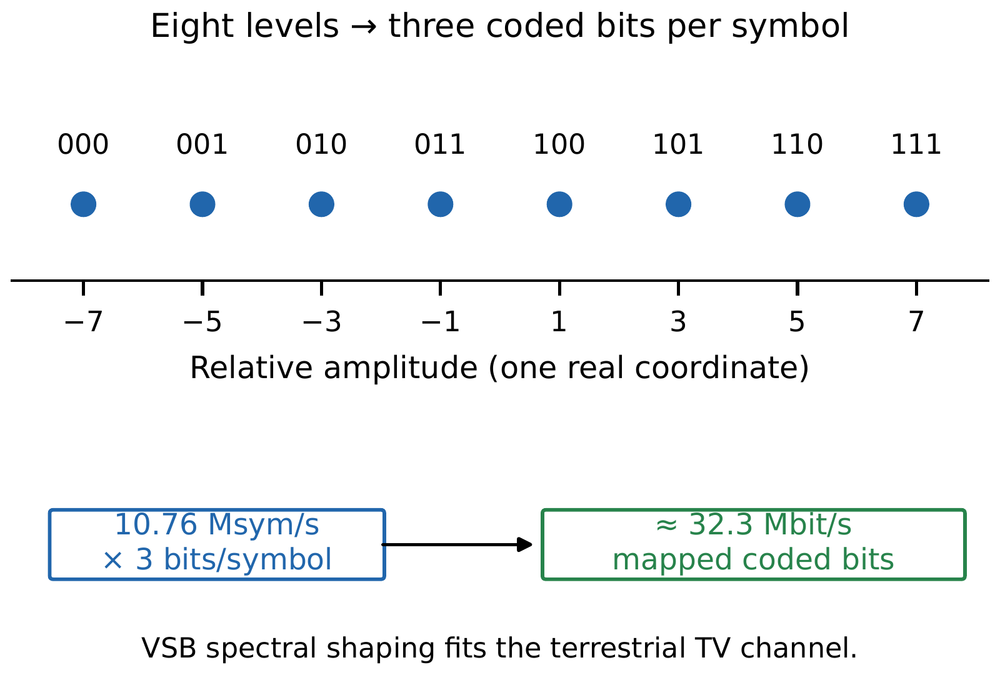
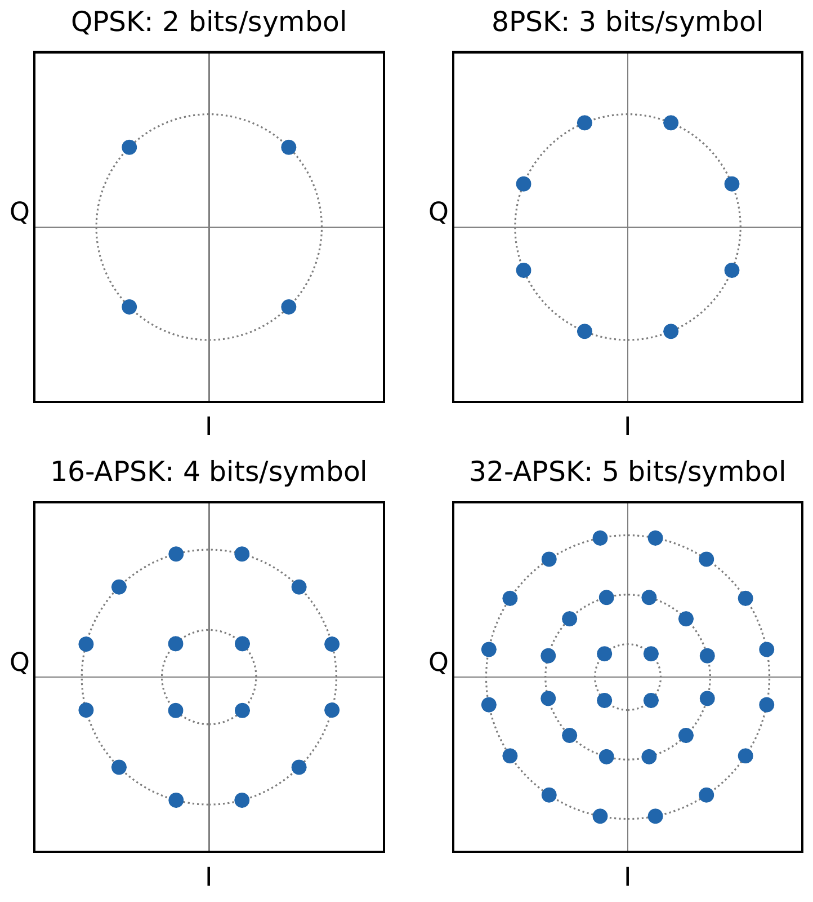
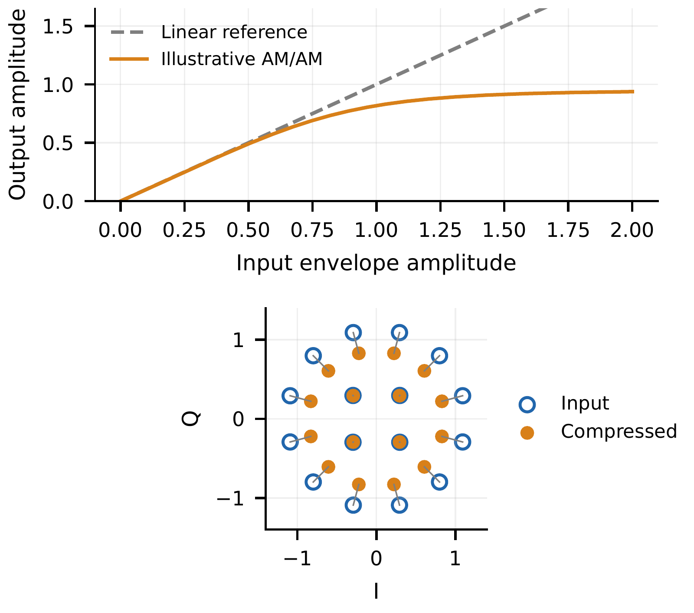
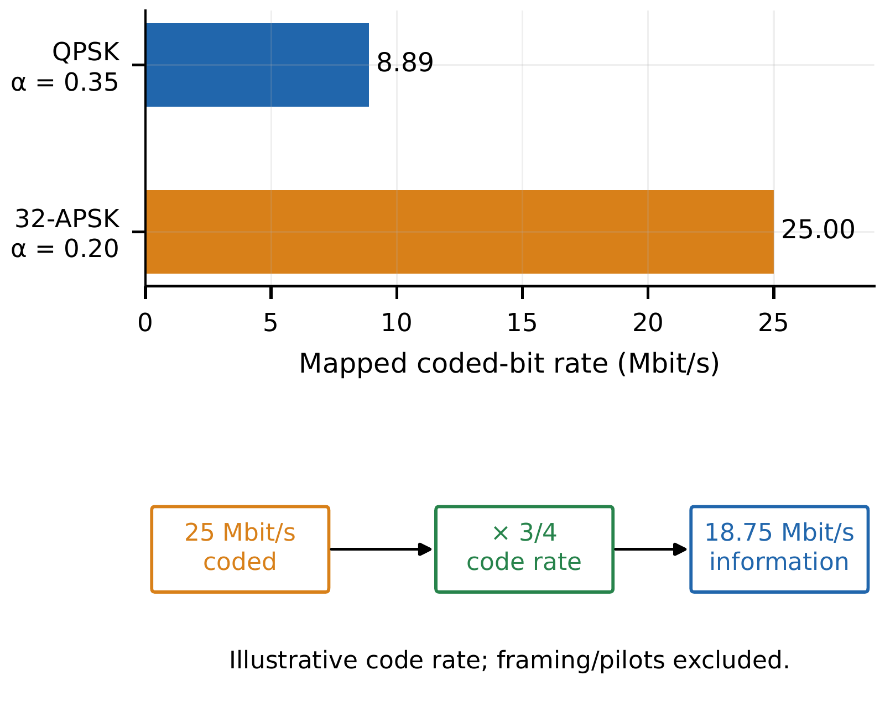

Fig. 96. A simplified DVB-S2 transmit chain. BCH and LDPC add error protection before mapping coded bits to symbols. Framing and pilots also consume resources; the receiver must synchronize, demap and decode.
Fig. 96 shows the system-level purpose of the digital chapters. A broadcaster needs to fit a useful information stream into a limited radio channel and deliver it reliably through noise, fading and imperfect hardware. Pulse shaping controls bandwidth, the constellation controls the waveform alternatives, and coding supplies relationships a receiver can exploit after noisy reception. The supplied VID07 lecture, titled COM03: DVB S2 Modulation for Satellite Video on YouTube, brings those choices together [source].
DVB means Digital Video Broadcasting; S identifies satellite transmission, and S2 is the second-generation satellite standard discussed here. Its physical layer can carry more than television pictures: the radio transfers an encoded bit stream, while the application interprets those bits. Satellite, cable and terrestrial systems face different combinations of path loss, multipath, fading and amplifier constraints. Their standards therefore make different waveform choices.
In DVB-S2, an outer BCH block code and an inner LDPC code provide concatenated protection; interleaving, mapping and framing prepare the protected stream for transmission [source]. Here outer means encountered first by the data in the transmit coding chain, while the receiver reverses the processing order. The chapter develops the engineering purpose of these stages; the later coding section explains the relationships between bits.
Read an Eight-Level Broadcast Constellation

Fig. 97. The eight ideal real-amplitude levels of an illustrative 8VSB constellation, with arbitrary three-bit labels. The lower calculation counts mapped coded bits; it does not give the useful video-data rate. Pilot offset, coding and framing are omitted from the level sketch.
Fig. 97 shows the terrestrial-broadcast example from VID06. Eight allowed levels carry coded bits per symbol. At the lecture’s approximately Msym/s, the mapper therefore handles about Mbit/s. Protection and synchronization consume part of that rate, so it is a count of transmitted labels rather than useful compressed-video bits [source].
VSB means vestigial sideband: the RF spectral shaping retains one sideband and a vestige of the other. The constellation’s one real coordinate records the allowed amplitude choices; the RF waveform still oscillates at a carrier. The standard’s pilot assists synchronization. Fig. 82 shows how retaining a vestige sets the occupied RF width. The small figure isolates the levels, with their pilot offset omitted, so the number of labels is easy to see.
Keep the waveform family with the bandwidth formula. The earlier expression describes the stated quadrature raised-cosine model. An 8VSB broadcast uses its own sideband shaping; applying the quadrature formula unchanged would lose that distinction. The common ideas remain symbol rate, allowed labels, pulse spectrum and overhead.
Use Rings to Organize the Satellite Symbols

Fig. 98. The four constellation families discussed in VID07, each scaled to unit average symbol energy. The APSK ring populations are 4+12 and 4+12+16. The plotted ring-radius ratios are illustrative; an actual DVB-S2 profile selects specified ratios.
Fig. 98 shows how the satellite format offers a sequence of larger symbol alphabets: QPSK, 8PSK, 16-APSK and 32-APSK. Their labels carry two, three, four and five coded bits per symbol respectively. Extra choices improve the bit count at a fixed symbol rate, while smaller decision separations demand a better received signal [source].
PSK points share one radius. APSK, amplitude-and-phase-shift keying, uses multiple radii as well as multiple phases: 16-APSK has four points on an inner ring and twelve on an outer ring; 32-APSK adds a third ring of sixteen. Those populations are the key picture to retain. An APSK point is still an I/Q coordinate, so the earlier complex-envelope and energy accounting apply.
The equal-energy normalization in the figure is for equally likely symbol points . It makes the alphabet comparison explicit. Changing the ring radii or symbol probabilities changes that average and requires a new normalization. The figure’s radii illustrate the families; they are not an optimized MODCOD or a claim about its error threshold.
Keep the Power Amplifier in the Picture

Fig. 99. An illustrative memoryless amplitude-compression model, with no phase distortion. The outer APSK ring compresses more than the inner ring. Open markers are input points; filled markers show compressed output points.
Fig. 99 shows why the transmitter hardware affects constellation choice. A real high-power amplifier eventually increases its output less rapidly than its input. Stronger envelope values are compressed more, changing the received geometry even before noise is added. The VID07 discussion connects satellite power efficiency with this nonlinear operating region [source].
The plot uses the declared teaching model where is input envelope amplitude and is an amplitude scale in the same units. A complex point becomes . This AM/AM model changes amplitude alone. A complete amplifier can also rotate phase, retain memory and create out-of-band distortion.
Equal-radius PSK decision points have equal amplitude at symbol centers; APSK reduces its many amplitude choices to a few rings. Pulse shaping still joins successive symbols with a time-varying envelope, so a PSK constellation alone does not make the entire shaped RF waveform constant-envelope. Pilots and receiver estimation can help identify distortion; output backoff trades available power for more linear operation. These are hardware and detection choices to carry into the link margin.
Spend a Fixed Channel on Symbols, Coding and Overhead

Fig. 100. VID07’s fixed-6-MHz comparison before error-protection and framing overhead: QPSK with rolloff 0.35 versus 32-APSK with rolloff 0.20. The lower branch applies an independently assumed rate-3/4 code to the 32-APSK case.
Fig. 100 shows the rate calculation the lecture explicitly identifies as reproducible on a test. Start with the channel width, use pulse rolloff to obtain the symbol rate, then count the coded-bit labels per symbol [source]: is the full ideal occupied RF width in hertz, is symbols/s, is dimensionless rolloff, and is the constellation size. The model assumes the stated raised-cosine support and excludes guard bands and framing overhead.
With MHz, QPSK and give Mbit/s of mapped coded bits. 32-APSK and give Mbit/s, a factor of larger. The six-megahertz channel is the lecture’s comparison example; it is not a universal satellite-transponder bandwidth.
Useful information rate additionally depends on the effective code rate and the fraction of symbol resources left after framing and pilots: Here must include all coding stages being counted; a listed inner-LDPC rate alone is not automatically the complete useful-payload fraction. For an illustrative and , the 25.0 Mbit/s mapped stream carries 18.75 Mbit/s of information. A real profile needs its own code and overhead counts.
A low-SNR receiver needs wider decision margins, so the system selects smaller constellations and stronger protection. A high-SNR receiver can spend less on protection and more on information. Changing and changing are separate choices; their combination is the MODCOD. The lecture’s inner-LDPC rates span to ; an actual profile uses supported modulation/rate pairs rather than every possible combination. Once at QPSK, further reducing the coding rate can trade more useful throughput for protection. The next section supplies the error-probability language needed to judge a choice.
Sources
ETSI, EN 302 307 V1.3.1: Digital Video Broadcasting; Second Generation Framing Structure, Channel Coding and Modulation Systems, March 2013. DVB-S2 specification. Supporting check of framing, BCH/LDPC concatenation, and constellation definitions; not an additional exam reading assignment.
G. D. Durgin, Canvas VID07, Advanced Satellite Video Transmission; supplied video titled “COM03: DVB S2 Modulation for Satellite Video,” 52:54. Lecture recording. Source frames and timestamped automatic captions retained locally.
G. D. Durgin, ECE 6390, supplied VID5–VID6 notes and review videos: digital waveforms, modulation, pulse shaping, rates, and adaptation.
1. At fixed channel width, predict the separate effects of lower rolloff and lower code rate.
One affects symbol packing; the other affects information bits per coded bit.
In the stated raised-cosine model, lower rolloff permits a larger symbol rate. Lower code rate puts more redundancy into each information bit and reduces useful throughput at a fixed physical symbol rate; reliability depends on the supported code and decoder.